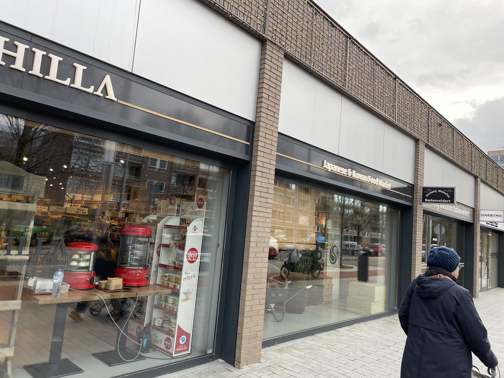
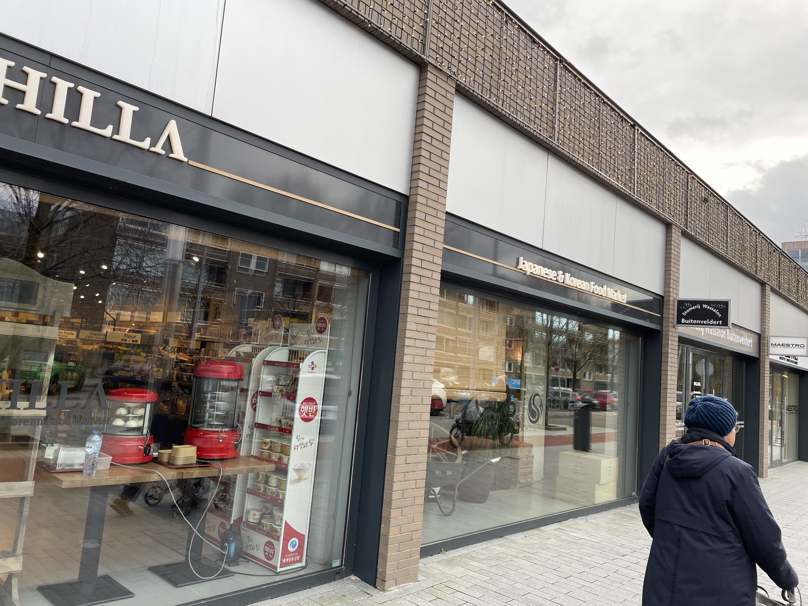
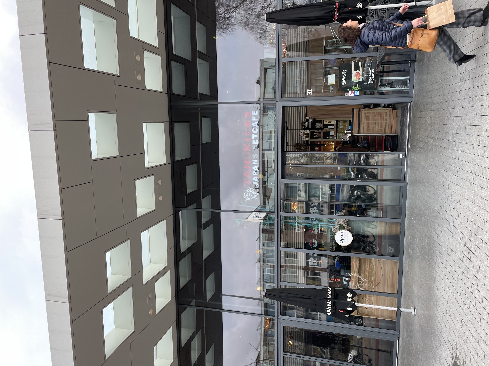
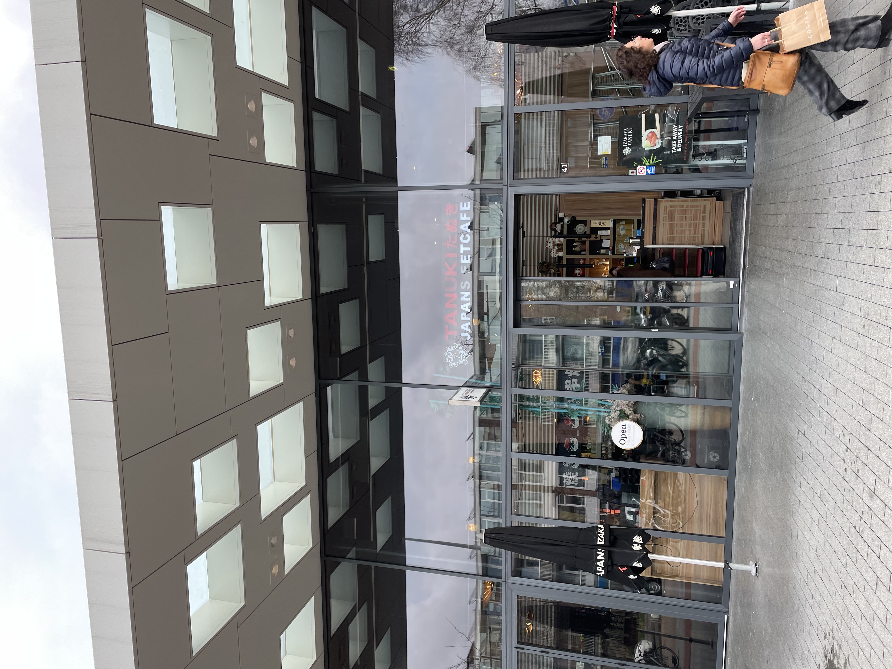

Inspiration
 


 



How to get around in A'dam
Walking
You can get almost everywhere by walking. If you want too explore Amsterdam, the best you can do is walk.
Plublic transport
In Amsterdam we have a lot of different kind of public transportation, you can think of a metro, train or bus.
Biking
When you think of The Netherlands you think about biks. In the Nederlands their are more bikes than people, bicycles is the best way to feel like a dutchman.